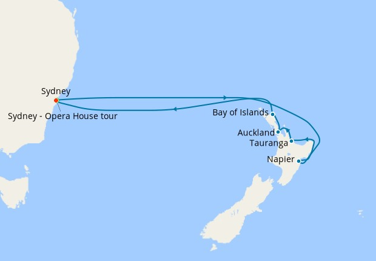

Trip Overview
Dates: March 20th - April 4th, 2026
Destinations: Ottawa → Sydney → New Zealand → Sydney → Ottawa
Sydney, Australia
Detailed Itinerary
| Date | Activity/Location (click for weather) | Details |
|---|---|---|
| March 20th, 2026 | Outbound Flight |
|
| March 23rd, 2026 | Sydney, Australia |
Carnival Splendor Port of Sydney Departure: 4:00 PM Ship Location Ships in port  |
| March 24th, 2026 | Sea Day |
Ship Location |
| March 25th, 2026 | Sea Day |
Ship Location |
| March 26th, 2026 | Sea Day |
Ship Location |
| March 27th, 2026 | Napier, NZ | Arrival: 7:00 AM Departure: 3:00 PM |
| March 28th, 2026 | Tauranga, NZ | Arrival: 10:00 AM Departure: 9:00 PM |
| March 29th, 2026 | Auckland, NZ | Arrival: 8:00 AM Departure: 6:00 PM |
| March 30th, 2026 | Bay of Isles, NZ | Arrival: 7:00 AM Departure: 4:00 PM |
| March 31st, 2026 | Sea Day |
Ship Location |
| April 1st, 2026 | Sea Day |
Ship Location |
| April 2nd, 2026 | Sydney, Australia |
Ship Location |
| April 3rd, 2026 | Return Flight |
FLL Departure: 4:50 PM YOW Arrival: 8:29 PM |
Contact Information on trip
- Daryl Mobile (613)858-0084
- Christine Mobile (613)898-0151
- Leah at Guelph (343)262-2176
- Keelan (343)202-2187
- Tori (613)581-2176
- Home phone (613)288-9187
Kids contact numbers: